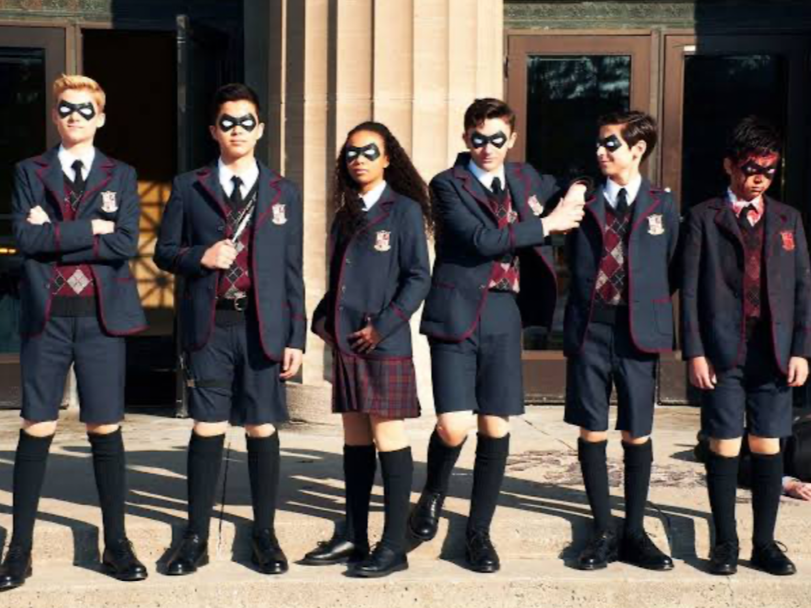
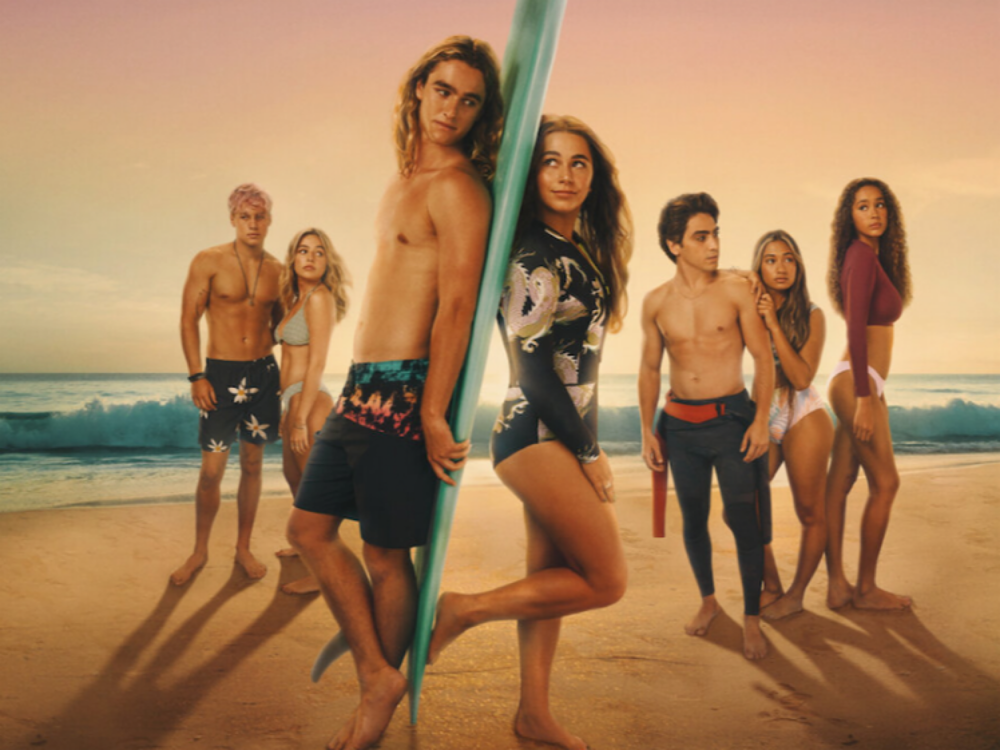
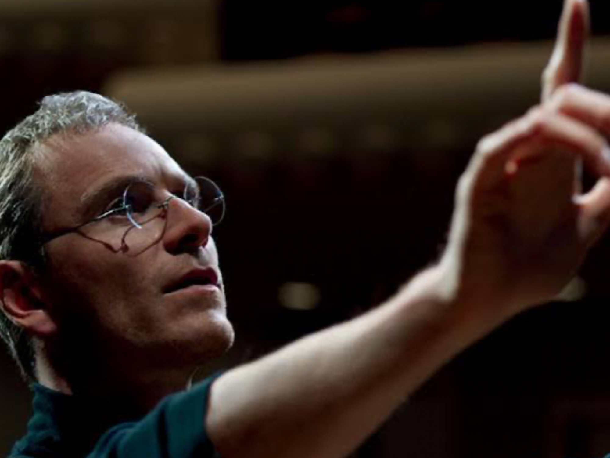
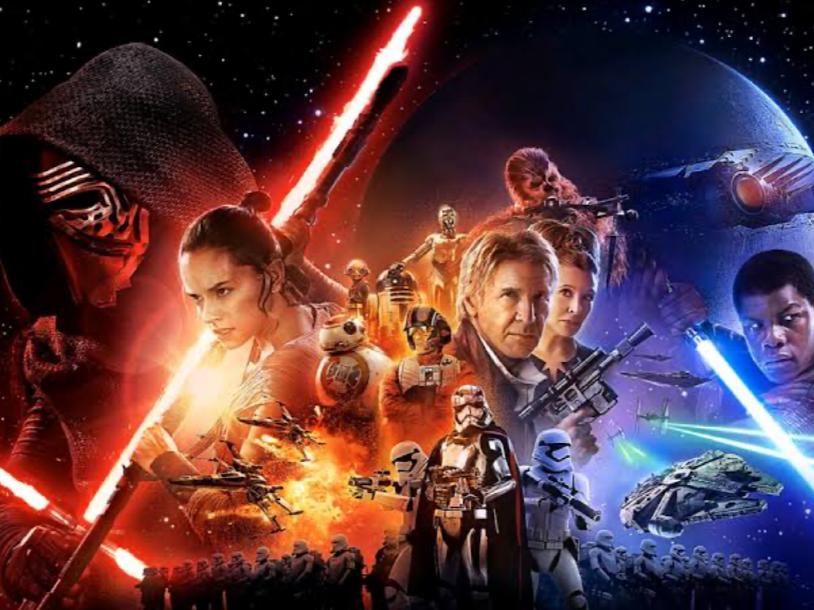
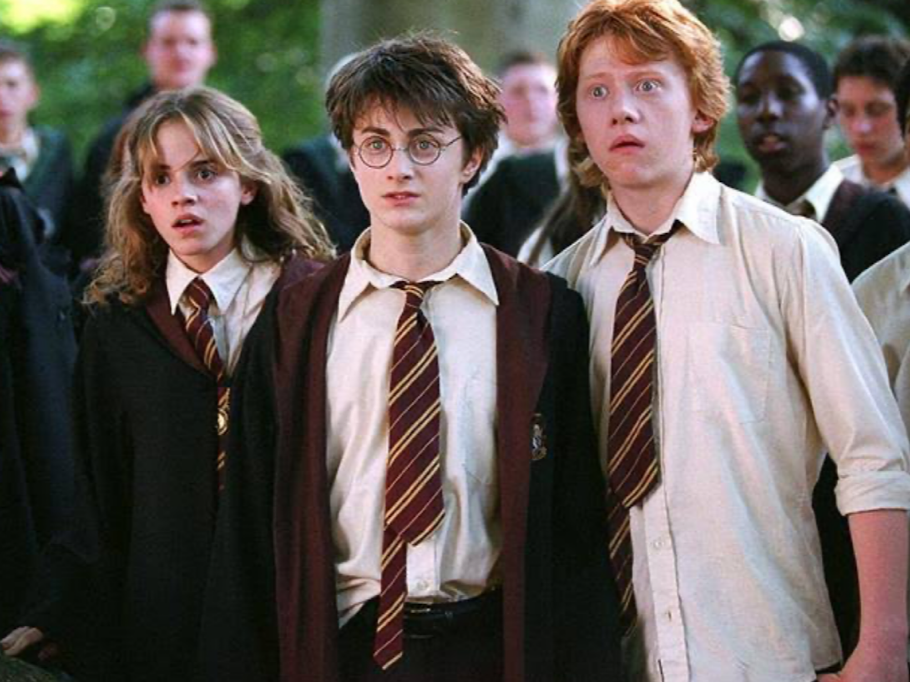

my favorite
myhood
q&a
sns
career
My Favorite movie
Netflix Series
aaa
トップボーイ
アウターバングス
aaa
ストレンジャーシングス

アンブレラーアカデミー

カオスなサマー
SF&IT
アバター
ソーシャルネットワーク

スティーブジョブズ
レディープレーヤー２
aaa

スターウォーズ
シュガー・ラッシュ
SUPPER
ワイルドスピード

ハリーポッター
エイトマイル
ボヘミアンラプソディー
スーサイドスクワット
ライズ
kids
チャーリーとチョコレート工場
ベストキッド
ヒーローキッズ
スポンジボブ
×